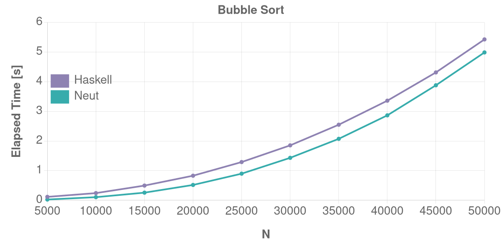

Benchmarks
You can find the source files for the following benchmarks here.
Table of Contents
Bubble Sort
This test creates a random list of length N and performs bubble-sort on the list1.
Linux (AMD64)

macOS (ARM64)
Dictionary (Create & Lookup)
This test creates a random dictionary of size N and performs random lookups from the dictionary for N times.
Linux (AMD64)

macOS (ARM64)
IntMap (Create & Lookup)
This test creates a random intmap of size N and performs random lookups from the intmap for N times.
Linux (AMD64)
macOS (ARM64)

Notes
I used the following hardware in the above benchmarks:
| Platform | Hardware |
|---|---|
| Linux (AMD64) | HP OMEN 16 2023 (7840HS, 32 GB, Debian) |
| macOS (ARM64) | Apple MacBook Pro 14 (M1 Max, 32 GB) |
I used the following commands to run benchmarks and generate the graphs:
just bench-linux amd64-linux # Linux (AMD64)
just bench-darwin arm64-darwin # macOS (ARM64)
You may want to read the Dockerfile in the repository to get the list of additional dependencies for running benchmarks. The list includes npm, hyperfine, etc.
Please tell me (hopefully gently) if some of the results are unfair because of reasons I overlooked.
I honestly don't know why the faster one changes depending on the environment here. Please let me know if you find out why.